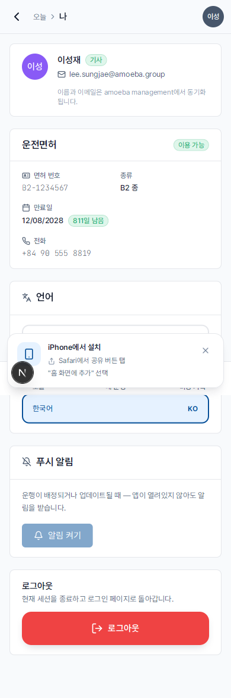

기사 — 개요
- 대상
- 회사 소속 기사 (AMA
MEMBER에서 매핑) - 기기
- 스마트폰 (PWA) — 차 안, 현장에서 사용에 최적화
- 읽는 시간
- 약 3분
기사로서 일상 업무는 운행과 발생 비용을 중심으로 돌아갑니다. 시스템은 운행 사이의 짧은 시간에 휴대폰으로 빠르게 조작할 수 있도록 설계되었습니다.
시스템에서 무엇을 하나요?
| 작업 | 시기 | 페이지 |
|---|---|---|
| 오늘 운행 확인 | 교대 시작 시 / 앱 열 때마다 | 오늘 |
| 새 배정 운행 확인 또는 거절 | 알림 수신 시 | 운행 확인 |
| 출발 시 "시작", 도착 시 "종료" 클릭 | 각 운행 전후 | 시작/종료 |
| 비용 기록 (주유, 오일, 주차, 통행료…) | 지출 직후 (7일 이내) | 비용 기록 |
| 본인 차량의 정비 알림 확인 | "오일 만료" 알림 수신 시 | 정비 알림 |
일반적인 운행 흐름
1. 관리자가 운행 생성 + 기사 배정 → 기사에게 푸시 알림
2. 앱 열기 → 운행 상세 확인 → "확인" 클릭
3. 출발 시각 도달 → "운행 시작" 클릭 (현재 주행거리 입력)
4. 운행 중 → 주유/주차 시 → "비용"에서 즉시 기록
5. 도착 → "운행 종료" 클릭 (도착 주행거리 입력)
6. 운행이 자동으로 "완료" 상태로 전환됨무엇은 하지 않나요?
- 승객 이름 입력하지 않음 — 관리자가 운행 생성 시 이미 배정
- 차량을 직접 선택하지 않음 — 관리자가 특정 차량 배정 (51K-238.91 등)
- 타인 비용을 승인하지 않음 — 관리자 업무
- 차량/기사/보고서 목록 접근 불가 — 사이드바에는 오늘, 내 운행, 비용, 나만 표시
"나" 페이지
하단 탭의 나 버튼으로 접근 — 프로필, 운전면허, 언어, 사용 안내서 및 로그아웃 메뉴.

효율적 사용 팁
💡
홈 화면에 PWA 설치 — 브라우저 없이 네이티브 앱처럼 실행됩니다. PWA 설치 가이드 참조.
⚠️
비용은 7일 이내에 기록. 7일이 지나면 시스템이 자동 잠금 — 관리자만 수정 가능합니다. 번거로움을 피하려면 빨리 기록하세요.